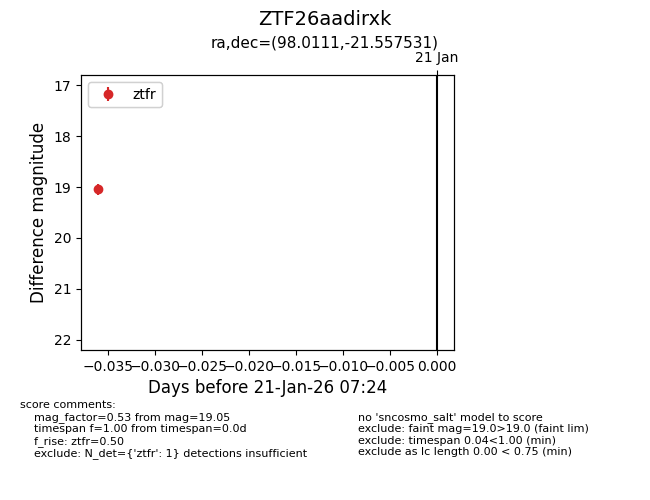
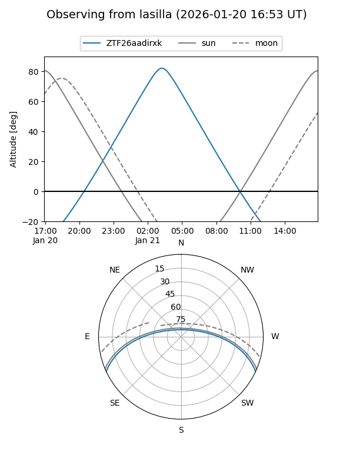
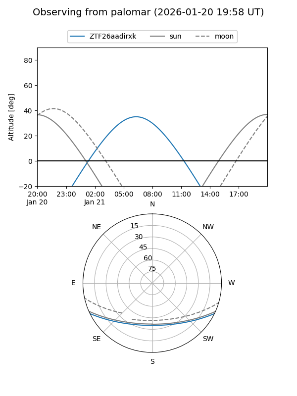

ZTF26aadirxk
Target ZTF26aadirxk at 2026-01-23 07:31
Aliases and brokers:
FINK: link
Lasair: link
ALeRCE: link
alt names
ZTF26aadirxk (ztf,fink_ztf)
Coordinates:
equatorial (ra, dec) = 98.0111,-21.55753
equatorial (HMS+DMS) = 06:32:02.66,-21:33:27.11
galactic (l, b) = (230.3743,-13.73928)
Flags:
Photometry:
last ztfg=18.32, ztfr=19.05
1 ztfg, 1 ztfr detections
Lightcurve

Visibility


Additional plots